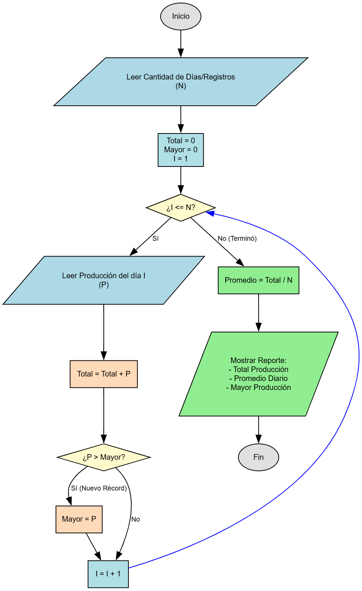

📝 Descripción del Problema
Una granja registra cada mes (durante 12 meses) la cantidad producida en kilogramos y el precio por kilogramo de 5 productos: tomates, lechuga, acelgas, zanahorias y chícharos.
Para ello se tienen 10 arreglos de 12 posiciones: 5 para los kilos producidos y 5 para los precios mensuales correspondientes.
Se debe calcular:
- a) ¿Qué producto produjo más kilogramos al finalizar el año?
- b) ¿Cuántos kilogramos totales produjo cada producto y cuánto dinero generó?
- c) ¿Qué producto generó más dinero en todo el año?
- d) ¿Cuál fue el importe total pagado a la granja cada mes (sumatoria de todos los productos)?
El propósito del ejercicio es analizar datos mensuales mediante arreglos y obtener conclusiones anuales usando ciclos y acumuladores.
💡 Pistas y Fórmulas Clave
- La clase principal debe llamarse
AnalizadorGranja.java. - Usa arreglos de tamaño 12 para representar cada mes del año.
- Para obtener la producción total anual de un producto, suma todos sus kilogramos con un ciclo
for. - El ingreso anual de un producto se calcula multiplicando mes a mes:
kilos[i] * precio[i]. - Para determinar cuál producto es el mayor (en kilos o dinero), compara los totales acumulados de cada uno.
- En el inciso (d), recorre los meses y suma el total generado por los 5 productos para cada mes.
📊 Diagrama de Flujo (Inciso A)
Aquí va la imagen del diagrama de flujo.';">